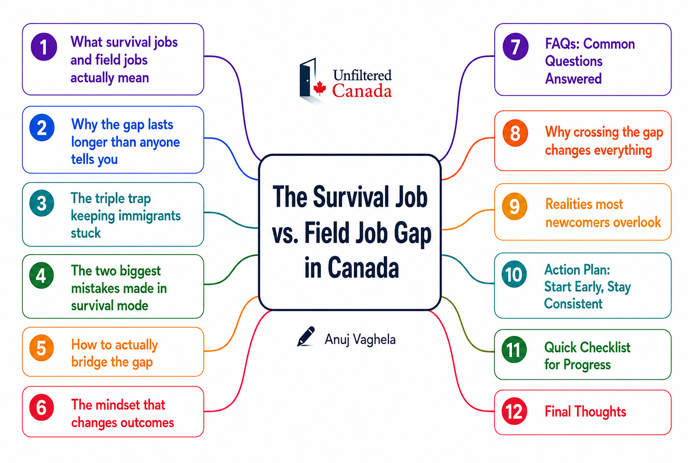

Most immigrants arrive in Canada with a clear plan: work a survival job for a few months, settle in, gain some Canadian experience, and eventually transition into the career they originally came here to build. On paper, the path sounds practical and temporary.
But for many newcomers, those "few months" quietly become one year. Then two. Then suddenly they are several years deep into retail, warehousing, food service, or delivery work while watching others advance professionally.
At that point, one question becomes hard to ignore: what went wrong?
Usually, nothing went catastrophically wrong. But nothing strategically right happened either. And that distinction matters more than most people realize.
The gap between a survival job and a professional field job is one of the most overlooked realities of immigration in Canada. It affects financial growth, career progression, mental health, confidence, and long-term settlement success. This article breaks down why it happens, what makes it worse, and what actually helps immigrants cross to the other side.

What Is a Survival Job vs. a Field Job?
Before getting into the gap itself, it helps to define what we are actually talking about.
Any role taken primarily to cover living expenses while working toward longer-term career goals in Canada. Retail, warehouse work, food service, delivery driving, customer service, factory work — these are the most common ones among newcomers. They are often physically demanding, lower paying, and completely unrelated to a newcomer's professional background. Their purpose is simple: financial stability.
A professional role directly connected to the industry or career someone trained for. An engineering graduate working at a firm. A developer writing code professionally. An accountant at a CPA office. A healthcare professional working in their sector. Field jobs do more than pay better — they build Canadian industry experience, professional references, career momentum, and long-term stability.
Why the Gap Lasts Longer Than Anyone Tells You
When I moved to Canada from India in 2017, I spent the next three years working in retail and food service while completing a three-year Engineering Technology diploma. I was ambitious. I worked hard. I was actively trying to build something better.
But there was one reality I did not fully understand when I arrived: the Canadian job market heavily prioritizes Canadian experience. For many immigrants, previous education, work history, and professional accomplishments from back home are often undervalued or treated as unfamiliar by employers here.
That is frustrating to hear. But understanding it early changes how you approach your entire strategy.
The transition from survival job to field job is rarely a single step. For most immigrants in Canada, the process looks something like this:
- Arrive and secure immediate income through a survival job
- Study or upgrade credentials to meet Canadian standards
- Build professional connections in your field while still in school
- Gain Canadian field experience through a co-op or internship
- Secure an entry-level field role
- Convert that into a long-term career
Each of those stages takes real time. The problem is that many newcomers treat them as sequential — finish one, then start the next. That is where years quietly disappear.
The Triple Trap Keeping Immigrants Stuck in Survival Jobs
After living through this personally and watching many others navigate the same journey, three barriers consistently combine to extend the gap far beyond what newcomers expect.
The Two Biggest Mistakes Made in Survival Mode
Mistake 1: Ignoring Professional Networking Until It's Urgent
After working long shifts in retail or food service, networking feels like the last thing anyone wants to do. That is completely understandable. It is also one of the most costly delays newcomers make. The best time to build professional relationships is before you urgently need a job. Small, consistent actions compound significantly over time: one LinkedIn connection per week, one coffee chat per month, one industry event per semester, one thoughtful comment on a professional post. Professional networking in Canada is not about asking strangers for jobs — it is about becoming professionally recognizable before the moment you need to be.
Mistake 2: Waiting Until Graduation to Pursue Field Opportunities
Many students believe they should finish school entirely before looking for professional work. In reality, the most important career opportunities often happen during the program itself. Co-op placements and internships are frequently the bridge between survival jobs and long-term careers. A good co-op provides Canadian work experience, industry exposure, professional references, resume credibility, and real networking opportunities — all at once. In some cases, it leads directly to a full-time offer. In my own experience, the diploma led to a co-op, and the co-op led directly to my first engineering role. That sequence was not accidental — it was the designed pathway, and it only worked because I pursued it during school, not after.
How to Actually Bridge the Gap
There is no shortcut. But there is a strategy that consistently works because it addresses all three barriers at the same time rather than waiting to tackle them one by one.
Get Canadian credentials as early as possible. If your industry values local education — and most do — this is the highest-priority move. Not because a diploma magically opens every door, but because it unlocks the systems that do: co-op pipelines, campus career fairs, alumni networks, and entry-level hiring channels that simply are not accessible otherwise.
Treat your co-op application like the most important job search of your early career. Because it likely is. A single co-op placement can solve the experience problem, the credential recognition problem, and the networking problem simultaneously. Prepare with the same seriousness you would bring to applying for a permanent role.
Start building your professional network in year one. Optimize your LinkedIn profile. Follow professionals in your field. Attend at least one career fair per semester. Join a student or industry association. Send a few informational interview requests. None of this requires much time individually — but done consistently over two or three years, it changes what graduation looks like entirely.
Let the survival job fund your life without letting it consume your future. Your survival job pays the rent. Your actual career growth happens in the time around it — studying, networking, applying for internships, building skills, practicing interviews. The immigrants who transition successfully maintain both systems simultaneously. The danger is when survival mode quietly expands to fill all available time and energy.
The Mindset That Changes Outcomes
I spent three years stacking shelves and serving coffee. Not with embarrassment, and not with false pride — just as a fact of the journey. Those years built something real in me. The kind of resilience that comes from doing hard, unglamorous work far below your education level, in a country that does not yet know what you are capable of, while trusting that the path you are on will eventually lead somewhere better.
I would not trade that.
But resilience without direction becomes endless endurance. And endurance without a plan is how people spend five years in a survival job instead of three.
The immigrants who cross the gap most successfully are not always the most talented or most qualified. They are the most intentional. They network while studying. They apply for co-ops early. They treat their survival job as a support system rather than an identity. They build the bridge before they desperately need to cross it.
The survival job to field job gap is real, and it is often longer and harder than anyone warned you about. But it is absolutely crossable — and the earlier you start building toward it, the shorter that gap becomes.
Leave a comment
Which part of this resonated most with your experience? I read every comment and use your questions to plan future posts.